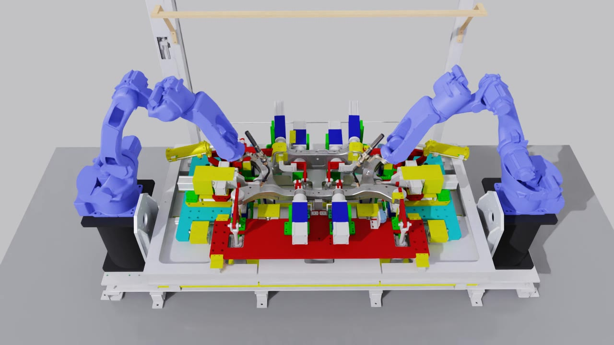

Weld Automation using Yaskawa Robots#
INDUSTRY · AIROBOTICS Yaskawa AR2010 arc welding · Hwashin body-in-white line
Automatic arc-welding motion generation for car-body sub-assemblies. Two Yaskawa Motoman AR2010 welding robots lay weld beads along the seams of a stamped part clamped in a fixture jig — the torch trajectory, orientation, and approach are generated from the part geometry, not hand-taught, targeting ≤ 0.1 mm seam accuracy and deployment on a real Yaskawa YRC1000 controller.

The main objective#
On a car body-in-white line, a stamped metal sub-assembly is clamped into a fixture jig and two robots weld along the seams — the thin lines where the pressed parts meet. Today those weld paths are programmed by hand: an operator jogs each robot with a teach pendant, point by point, for every part variant. That is slow, hard to reproduce, and doesn’t scale to many body types.
The objective of this project is to make that welding automatic. Given the part’s geometry, the system should:
Find the welds — extract the weld seam lines directly from the part’s CAD / 3D scan (no manual point-teaching).
Generate the motion — compute, for each robot, a collision-free trajectory whose torch tip traces the seam with the correct torch orientation and safe approach / retract paths, to within 0.1 mm of the seam.
Execute it — validate the trajectory in simulation, then stream it to the real Yaskawa YRC1000 controller driving the physical AR2010 robots.
Two robots share the part, one working each side, so their motions are planned together and must never collide. The videos below are the simulation validation stage: the two AR2010 robots executing generated weld trajectories along the seams of a real Hwashin sub-assembly held in its jig.
Seam welding — left & right robots#
Each robot follows its side’s seams (authored as “spotlines”). Below are the on-torch camera views for two representative seams, left and right robot.
Seam 1#
Seam 5#
How the motion is generated#
The planning problem is stated precisely: over a weld executed on the interval
t ∈ [0, T], define the point-to-seam error e(t) as the distance from the torch
tip to the closest point on the seam curve S(u). The planner chooses the joint
trajectory q(t) that minimises the peak error subject to the physical constraints
(joint limits, reachability, collision avoidance, steady weld speed). Acceptance:
max e(t) ≤ 0.1 mm on every seam and every robot.
The generation pipeline I built:
Waypoint generation — convert the extracted seam curve into an ordered sequence of robot waypoints (Cartesian, then joint).
Torch orientation — compute the torch angle / work-and-travel orientation at each waypoint from the local seam geometry.
Approach / retract — plan safe lead-in and lead-out paths to and from each weld start/end, avoiding the part and jig clamps.
IK — a clean solver wrapper (
ikpyon the AR2010 URDF, chain ending at the welding-wire TCP) turns each tool pose into a 6-joint solution, seeded by the previous waypoint for smooth, branch-stable motion.
Robot model — sim matched to the real cell one-to-one#
Before trusting a generated trajectory, the simulated AR2010 has to behave exactly like the real one:
Weld torch integrated — the arc-welding torch geometry was added as the AR2010 end-effector (visual + collision meshes, URDF / MJCF), and a TCP site injected at the wire tip so trajectories target the torch tip, not the flange.
Sim ↔ real calibrated — home pose (
qpos = 0) reproduces the YRC1000RPOSCreading, and per-axis pendant jogs produce the same posture in sim once pulses are converted with the calibrated pulses-per-radian table. Verified joint-by-joint against the real controller.Dual runtime — the robot runs in both MuJoCo (fast trajectory testing) and NVIDIA Isaac Sim (photoreal validation, the renders above).
Real hardware — host control of the physical AR2010 over the YRC1000 (read
RSTATS/RPOSJ/RPOSC, stream trajectories), with verified reusable weld poses saved for replay.
Real-world experiment — driving the physical robot#
The generated trajectories don’t just run in simulation — they drive the real Yaskawa AR2010 on a YRC1000 controller. These two videos walk through the real-world experiment: how a Yaskawa JOB works, how commands are sent from the PC to the robot, and how the same trajectory is kept in lock-step between MuJoCo and the physical cell.
Real-world experiment (1) — the Yaskawa JOB and how commands reach the robot.
Real-world experiment (2) — the robot mirroring MuJoCo, command + encoder-feedback loop.
How a Yaskawa JOB works, and how we send commands#
A Yaskawa robot normally runs a JOB — an INFORM program stored on the YRC1000 and
started from the teach pendant. Each JOB line is a motion instruction (MOVJ for
joint moves, MOVL for linear moves) with a taught position, speed, and positioning
level. Traditionally every one of those positions is jogged and taught by hand.
Instead of hand-teaching a JOB per part, we drive the robot from the PC over Ethernet host control. With the pendant switched to REMOTE mode, the controller services host-control requests on TCP port 80:
Read (safe, no motion):
RSTATS(status),RPOSJ(joint pulses),RPOSC(Cartesian pose) — used to capture the home/weld pose and to log the executed path.Motion: the generated trajectory is streamed as fixed-format host-control command packets —
PMOVJ(joint-pulse targets) orMOVL(Cartesian linear) — one waypoint at a time.
Each axis has a calibrated pulses-per-radian table, so a joint angle in simulation converts exactly to the encoder pulse count the controller expects (verified round-trip error < 0.1° per axis). In parallel, the controller streams encoder feedback back on a separate UDP channel (the “BLUE” feed, port 19450) — command vs. feedback pulses per axis — which is what lets the digital twin mirror the real robot’s live state.
Motion commands (MOVJ, MOVL, PMOVJ) are only ever
sent with the pendant in REMOTE, servos deliberately enabled, and after a slow single-repeat
dry run — never auto-executed. Read commands (RSTATS, RPOSJ,
RPOSC) are motion-free.
Communication flow — CAD → MuJoCo → real robot#
Roadmap#
Open-loop cycle first — extract seams → generate trajectory → validate in sim → execute on the real YRC1000 at the Hwashin testbed — with live 3D-camera seam detection and closed-loop adjustment as a later phase.
Tech stack#
Robots: dual Yaskawa Motoman AR2010 arc-welding arms on a Yaskawa YRC1000 controller
Motion: weld-seam extraction, waypoint + torch-orientation generation, approach/retract planning,
ikpyinverse kinematics (welding-wire TCP)Simulation: MuJoCo (fast) + NVIDIA Isaac Sim (photoreal), USD assets
Sim-to-real: pulses-per-radian calibration, host control over the YRC1000, CSV pose logging
Language: Python